Установка PostgreSQL
Ссылка на фоициальный сайт
Заходим на сайт и скачивыем диструбутив
Установка диструбутива тривиальна:
Показать этапы установки
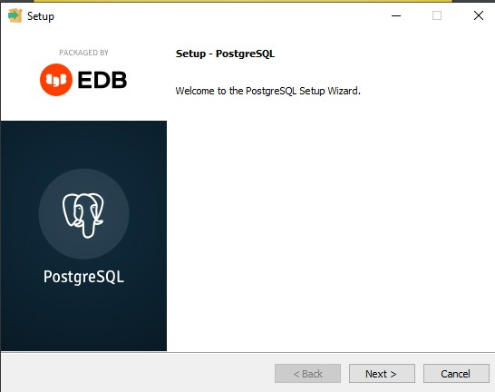
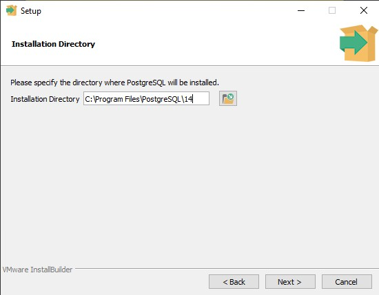
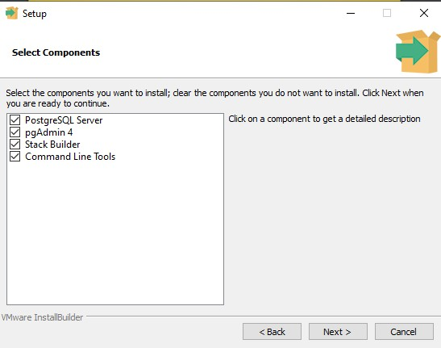
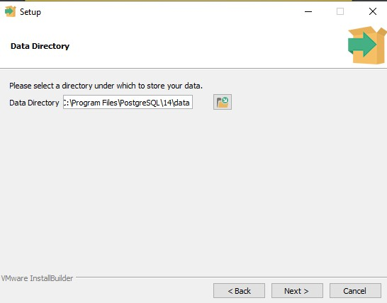
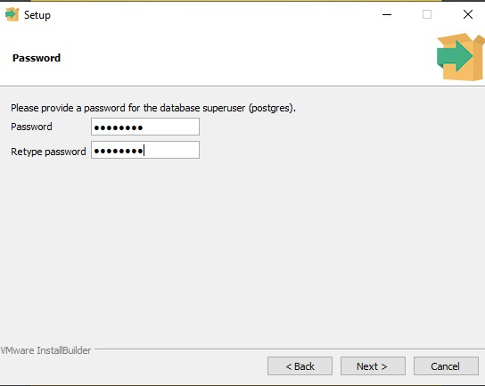
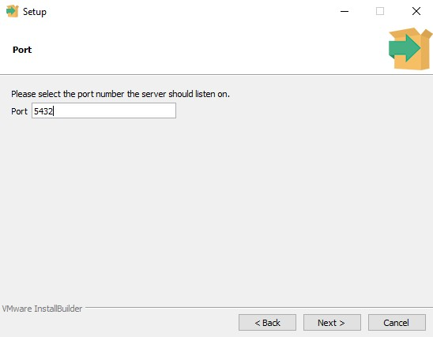
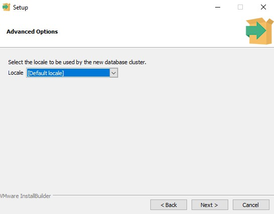
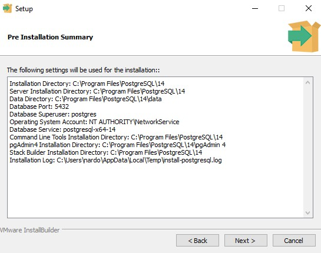
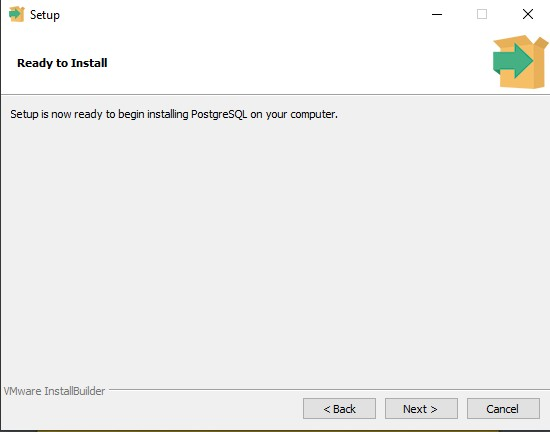
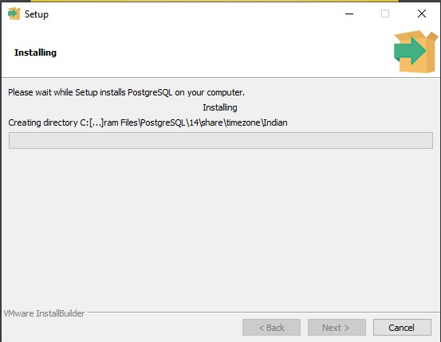
Проверка установленной среды
По умолчанию на Windows PostgreSQL устанавливается в директорию C:\Program Files\PostgreSQL\14\bin, из этой директории открываем powershell и вводим следующие команды (перед командой вводим .\ так как в глобальную переменную path мы не указывали путь до этой директории):
- psql --version - убеждаемся что он установлен
- psql -U postgres - входим в СУБД, при входе он запросит пароль суперпользователя
- \l - покажет список существующих баз данных
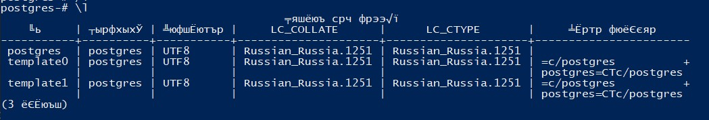
- create database node_postgress; - создаем базу данных node_postgress (обязательно в конце точку с запятой)
- \connect node_postgress - подключаемся к базе node_postgress
- \dt - Покажет существующие в базе таблицы
- \! chcp 1251 - Поправит корректное отображение кирилицы
- select * from person; - Получить все поля из таблицы person